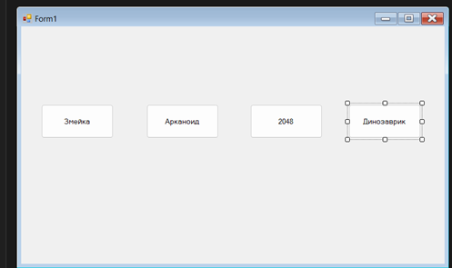
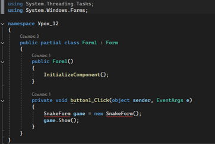
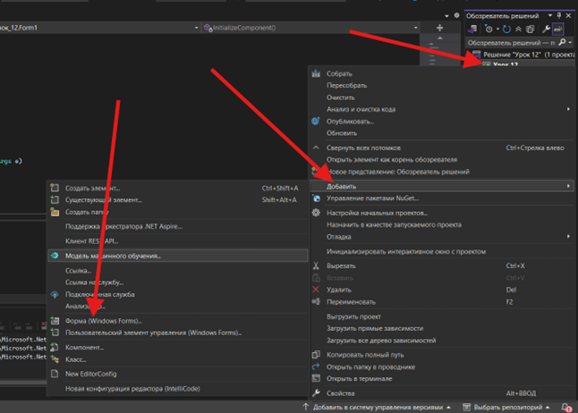
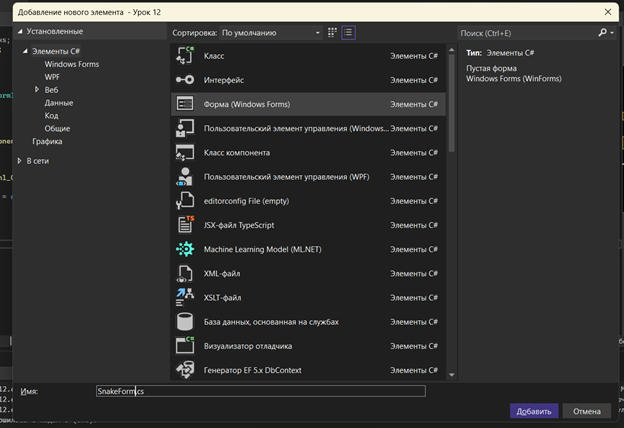
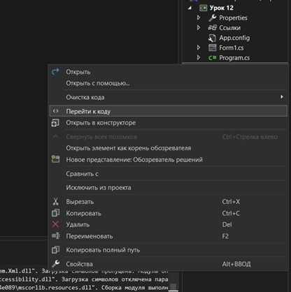
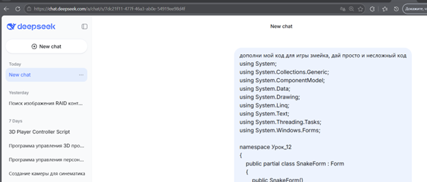
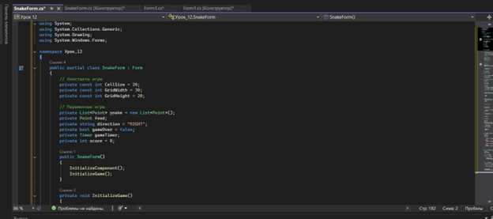
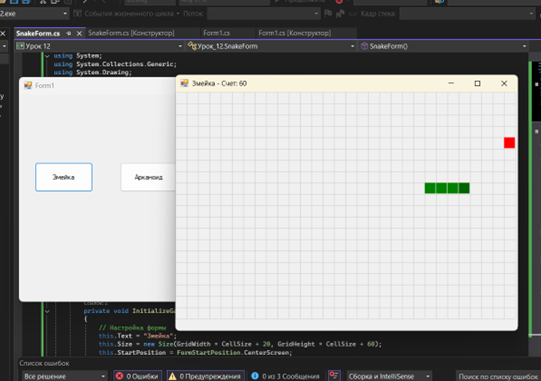
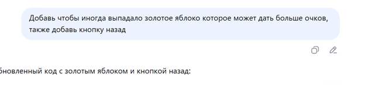
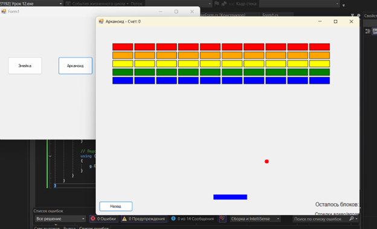

ТЕОРЕТИЧЕСКАЯ ЧАСТЬ УРОКА 12
На этом уроке ученики знакомятся с новым подходом к программированию — использованием нейросети как помощника разработчика. Вместо того чтобы писать весь код самостоятельно, мы учимся правильно формулировать задачи для AI и получать готовые решения. Такой подход широко используется в реальной разработке и позволяет значительно ускорить создание программ.
Основой работы является взаимодействие с AI через текстовые запросы (промпты). Чем точнее и понятнее сформулирован запрос, тем лучше результат. Важно указывать, на каком языке нужно писать код (C#), какую технологию использовать (Windows Forms), а также описывать, что именно должна делать программа. Например, если не указать, что нужен WinForms, нейросеть может выдать код для консоли или другой технологии.
Также важно понимать структуру кода, который возвращает AI. Даже если код был сгенерирован нейросетью, ученик должен уметь вставить его в нужное место проекта, запустить и при необходимости исправить ошибки. Это развивает навык чтения и понимания чужого кода, что является важной частью программирования.
Отдельное внимание уделяется простоте. На уроке используются только базовые элементы Windows Forms: кнопки, метки, таймеры и обработчики событий. Сложные библиотеки и большие проекты не используются, чтобы ученики могли сосредоточиться на логике и работе с AI.
Также рассматривается процесс доработки кода. Если программа не работает или работает не так, как нужно, ученик может задать уточняющий запрос нейросети, описав проблему. Таким образом формируется цикл разработки: идея → запрос → код → тест → исправление → улучшение.
В результате ученики понимают, что нейросеть — это инструмент, который помогает создавать программы быстрее, но ответственность за понимание и результат остаётся за разработчиком.
ПРАКТИЧЕСКАЯ ЧАСТЬ
ГЛАВА 1. Создание проекта и интерфейса
button1, button2, button3. Поменяйте текст кнопок на навания игр Змейка, Арканоид, 2048, Динозаврик гугл
ГЛАВА 2. Переход в код и открытие новой формы
private void button1_Click(object sender, EventArgs e) { SnakeForm game = new SnakeForm(); game.Show(); }
Таким образом, при нажатии на кнопку открывается новое окно с игрой SnakeForm. Этот же принцип можно использовать для остальных кнопок, создавая отдельные формы под каждую игру.

ГЛАВА 3. Создание формы игры SnakeForm
SnakeForm пока не существует. Программа сообщает, что не знает, что такое SnakeForm, поэтому эту форму нужно создать вручную. Для этого необходимо нажать правой кнопкой мыши по проекту в Solution Explorer, выбрать Add → Windows Form, задать имя SnakeForm и нажать Add.


ГЛАВА 4. Работа с AI и генерация кода игры


ГЛАВА 5. Запуск, тестирование и доработка


ГЛАВА 6. Подключение второй игры (Арканоид)
private void button2_Click(object sender, EventArgs e) { ArkanoidForm game = new ArkanoidForm(); game.Show(); }
ArkanoidForm ещё не существует. Её нужно создать так же, как и ранее: ПКМ по проекту → Add → Windows Form → назвать ArkanoidForm. Далее открыть код этой формы (ПКМ → View Code), скопировать текущий пустой код и отправить его в DeepSeek, чтобы нейросеть увидела название класса и структуру. Затем написать запрос на создание простой игры «Арканоид» для Windows Forms с коротким и понятным кодом. После получения ответа вставить код в ArkanoidForm.cs и запустить проект для проверки работы второй игры.
ГЛАВА 7. Добавление остальных игр и оформление интерфейса
На этом этапе необходимо повторить те же действия для остальных кнопок: добавить обработчики событий, создать новые формы для игр (например, 2048 и Динозаврик), отправить код формы в DeepSeek и получить готовую реализацию игр.
Если остаётся время или ученик работает быстрее остальных, можно предложить ему самостоятельно придумать и реализовать дополнительные игры с помощью нейросети.
После того как основные игры готовы, можно перейти к оформлению интерфейса: добавить изображение на задний фон формы Form1, а также установить картинки на кнопки через свойство Image, чтобы сделать приложение более визуально привлекательным и завершённым.
ГЛАВА 8. Сборка проекта
На завершающем этапе необходимо собрать проект в готовое приложение, как это делалось на прошлом занятии. Для этого нужно переключить режим сборки на Release, затем выполнить Build → Rebuild Solution. После успешной сборки перейти в папку проекта по пути bin/Release/..., где находится .exe файл. Этот файл можно скопировать в удобное место и при необходимости создать ярлык на рабочем столе для запуска приложения.
ЗАКЛЮЧЕНИЕ
На этом уроке ученики познакомились с новым подходом к созданию программ — разработкой с помощью нейросети. Они научились формулировать запросы, получать готовый код, вставлять его в проект и дорабатывать под свои задачи. В результате у каждого получилось приложение с несколькими играми, каждая из которых открывается в отдельном окне. Ученики увидели, как можно быстро создавать рабочие программы, используя AI как инструмент, и получили опыт самостоятельной разработки, тестирования и улучшения своих проектов.